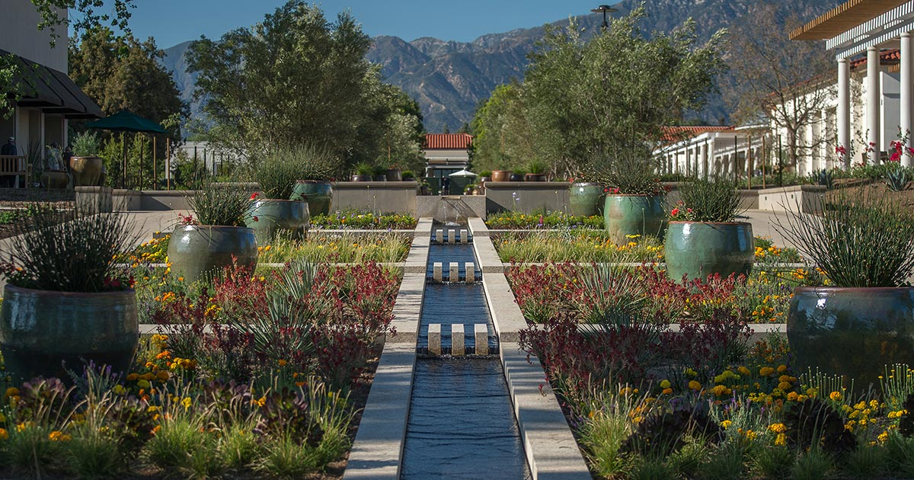
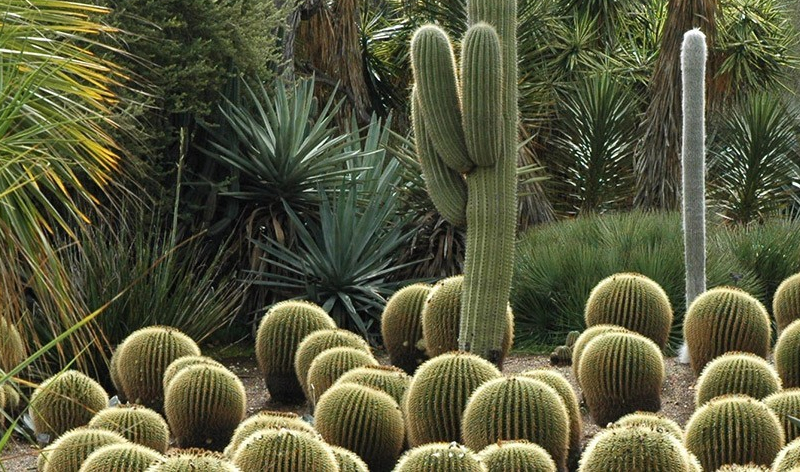
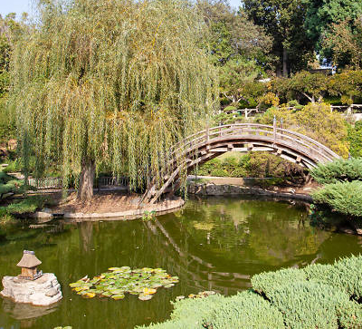
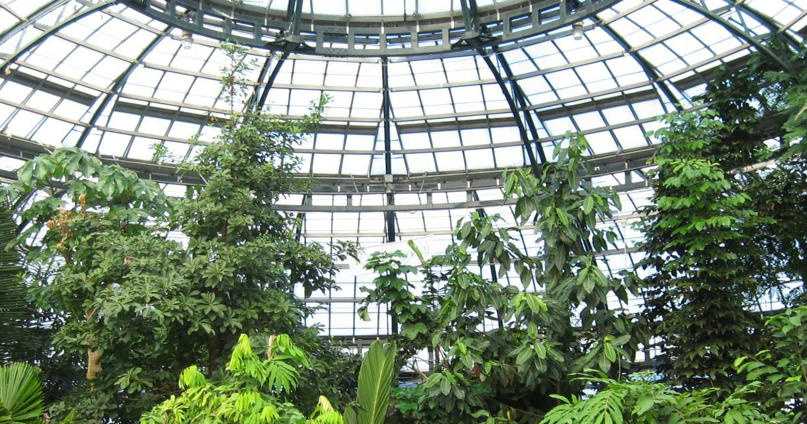
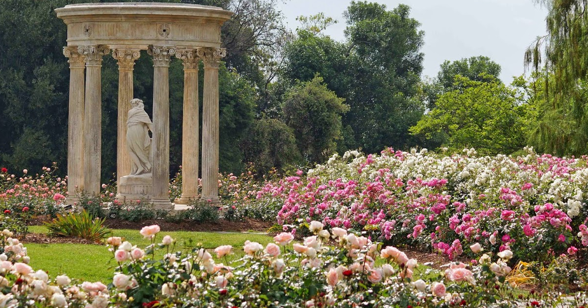
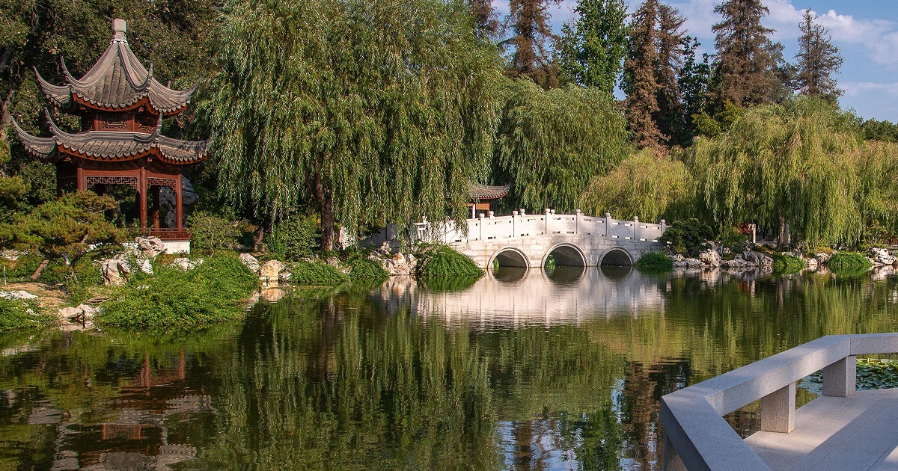

The Huntington Botanical Garden
Encompassing about 130 acres, the botanical gardens feature living collections in 16 stunning themed gardens with more than 83,000 living plants including rare and endangered species, and a laboratory for botanical conservation andresearch. There are many exhibits and themes to explore as you dive into the garden's own world.



Conservatory Greenhouse

Rose Garden

Chinese Garden
One of the most popular exhibitions in the Botanical Garden. Filled with many Chinese Native plants surrounded by Chinese architecture, entering this exhibition feels like you are transported to a whole new place.